The first part of the tab is shown below :
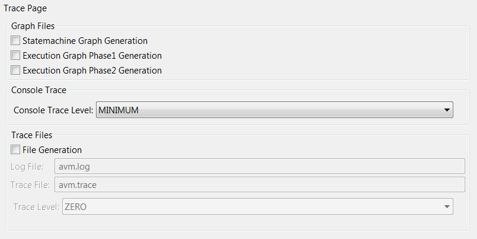The Graph Files check boxes allows the production of diverse graphs (in .gv format (GraphViz)). Those graphs may describe the studied system and the symbolic execution that triggered their creation.
Three types of graph can be generated (we'll see details later). The files will be generated as follows :
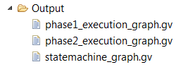This graph gives an overview of the system's components and of the possible state changes that can happen. However, it does not show communications between the components.
Example :
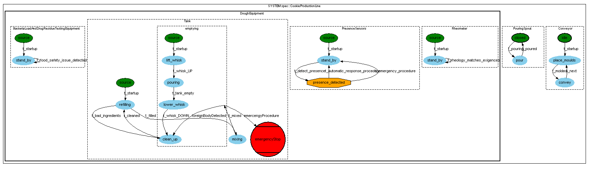This graph shows the succession of the evaluation contexts that were explored during the symbolic execution. It is displayed under the form of an oriented graph that can be interpreted as a tree. The graph normally covers all contexts reached therefore there may be several branches that stem from a single node (see symbolic exploration). This graph also displays additional data, among other things :
Here is a simple example :

This graph is a lightened version of the Execution Graph Phase 1. Some of the information is not displayed for better readability.
Here is a simple example (same system as previous) :
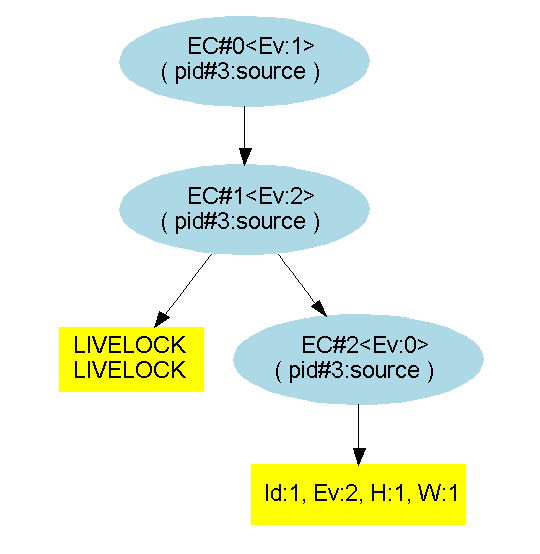The user can set the console trace level in order to filter the information that is displayed on the standard output of Eclipse's console during a symbolic execution.
The several levels are :
For instance, a "SILENT" output on a simple model would be :
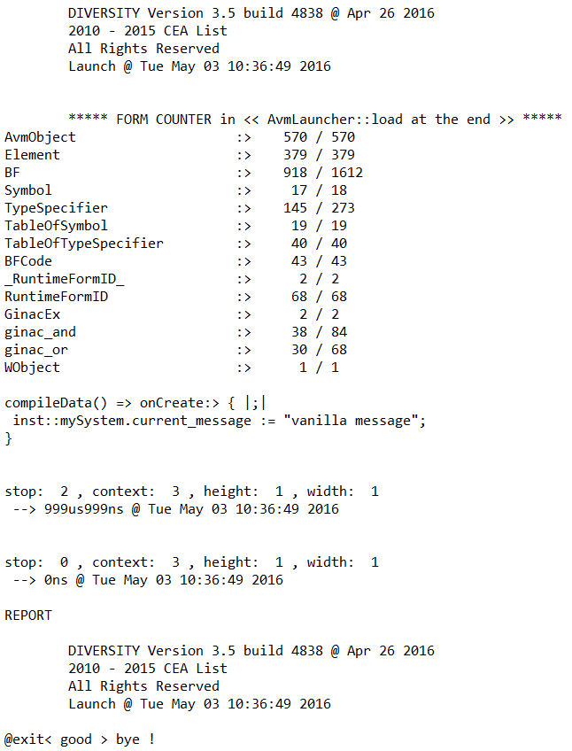Whereas a "MINIMUM" output on the same model would be :
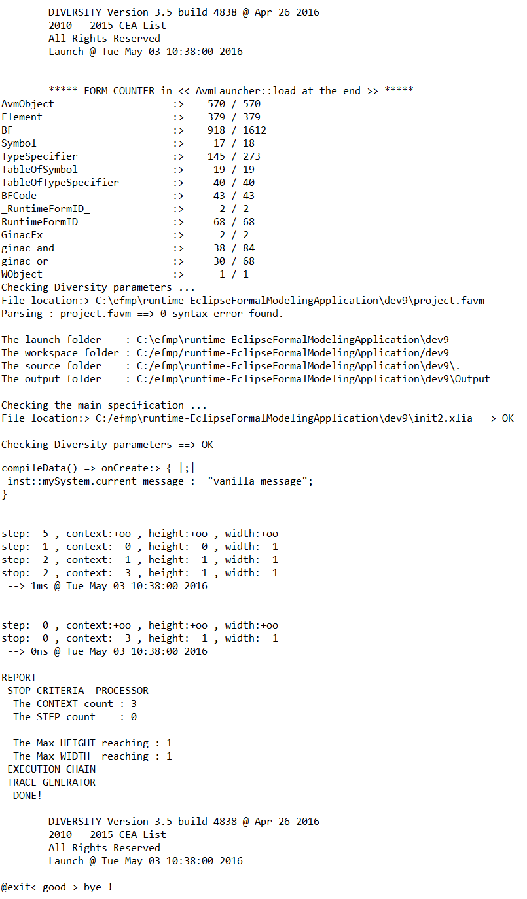The user can optionally have the engine generate all sorts of trace files. This can be done by checking the "File Generation" check-box. When doing so the tab is extended as follows :
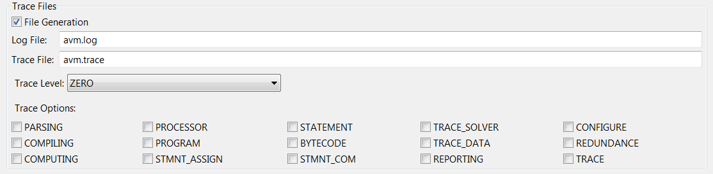Two files will be generated as follows :
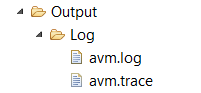For a simple system, the vanilla version (ZERO trace level and no trace options checked) of the "avm.trace" file would be :
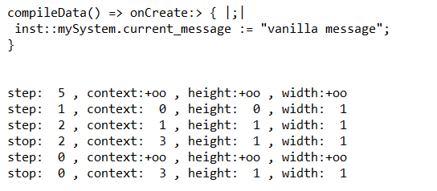And an excerpt of the "avm.log" file would be :
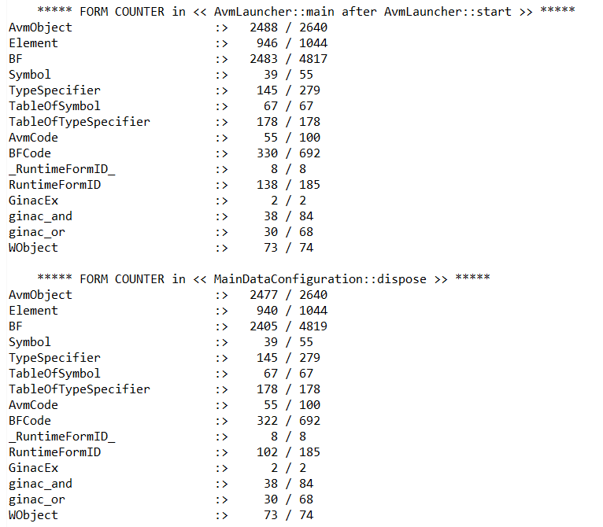The second part of the tab is shown below :
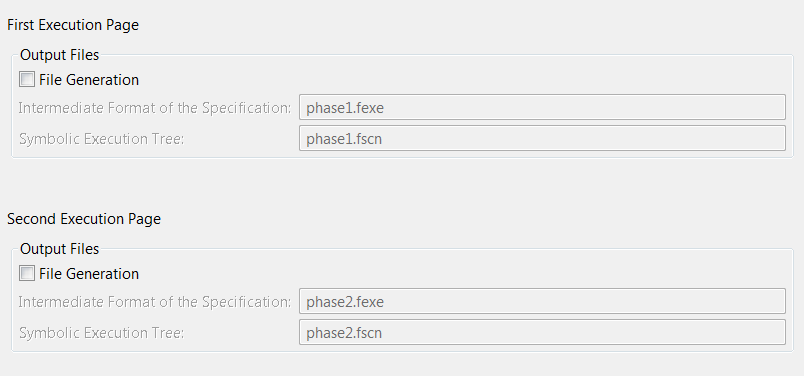When checking "File Generation", after a symbolic execution, the following files appear :
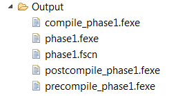For the same simple system, the content of this file is the following :
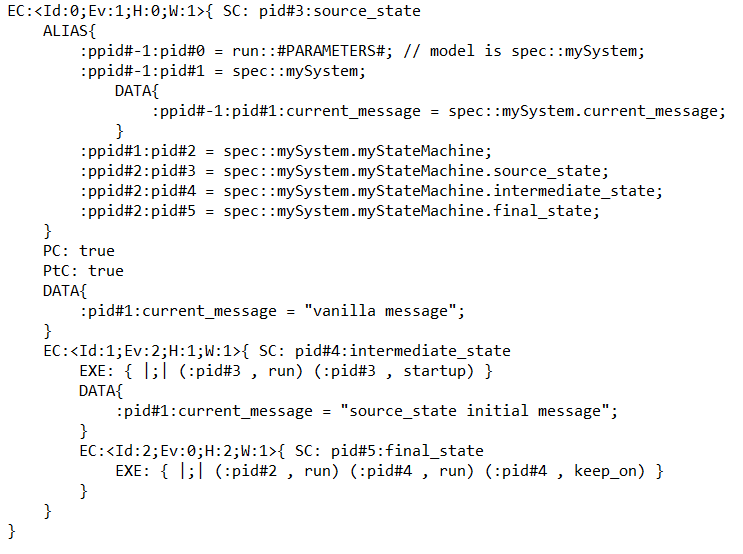Much like the "phase1_execution_graph.gv" graph, it describes the different evaluation contexts that have been reached. But id does so in text form and with additional displayed data.
Those files contain the code describing the system and interpreted by the engine at different states of the compiling process. It is notably useful to debug issues concerning the "@run{...}", "@schedule{...}" and/or "@concurrency{...}" primitives.
When checking "File Generation", after a symbolic execution, the following file appear :
For the same simple system, the content of this file is the following :
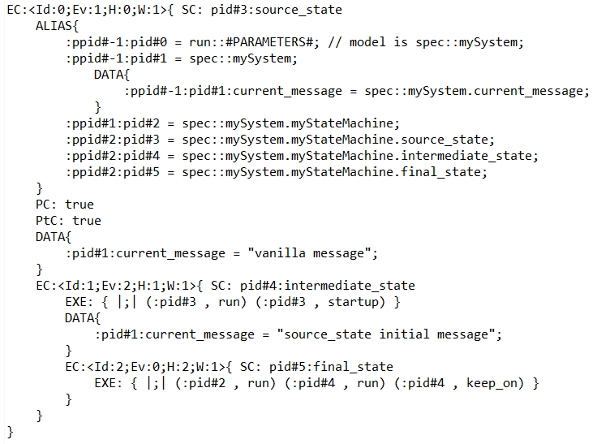For simple systems, it's content is exactly the same as the "phase1.fscn" file.